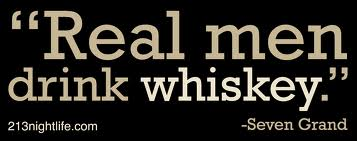
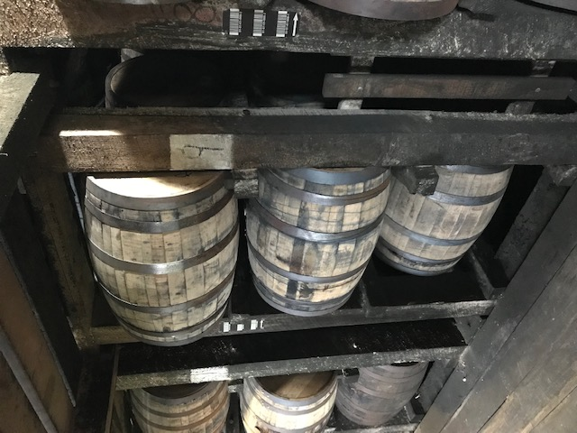
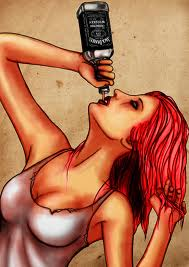

This is a blog that tells a short story of the History of Whiskey
Up until 1791, anyone could distill spirits for any reason in the US. The gov gave as much interest to those distilling as to those raising pigs or growing tomatoes. Communities even pooled their resources to build stillhouses to let the locals transform their crops into a more manageable and profitable value added product.
But in 1791, Alexander Hamilton, As Secretary of the treasury, inaugurated an excise tax on whisky to help retire the debt generated during the Revolutionary war. This tax infuriated these independent minded farmers in the western parts of the states.
So the Whisky Rebellion and the enforcement of the whisky tax by the Government were too much for many of these farmers so they picked up their stakes, packed up their families and moved to the less governed backcountry of Virginia, Kentucky and the Carolinas.
So moving on to 1801, newly elected anti-Federalist Thomas Jefferson was sworn into presidency and one of the early commitments he made was to do away with the excise tax imposed on whisky that had caused so much grief.
So on June 30, 1802, the tax was repealed. The reason was as much about repairing relations between the farmers and the feds as it was about financial management but in the case of the former, the rift between the Scottish and Irish farmers and the Government remained and in some cases, remain today.
Except for a brief period (1814-1817) following the War of 1812, liquor was untaxed in the US until the Civil War. It was in 1862 that Dept. of the Treasury established an array of new taxes on tobacco and whisky as an emergency measure to cover the costs of the American Civil War.
Now the local lawmen, in public sided with the revenuers but in private, their true sympathies lay with the neighbors and friend trying to make a living. A sharp distiller would keep local sheriffs and politicians so well lubricated, well supplied or well-paid that word of impending raids would reach them before the raiders hit. So consequently, the local law seemed to have sidestepped the big conflicts that existed between the whisky makers and federal agents.
Well, we’ve now reached prohibition, the 18th amendment. Championed by the anti-Saloon League, prohibition was a temperance movement that portrayed the liquor industry as a corrupt and ungodly part of society. Proposed by the Senate on December 18th, 1917, approved by 36 states and ratified on January 16th, 1919, it became effective on January 16th, 1920. Known as the Volstead Act, it banned the manufacture, sale and transportation of alcohol. Though the act banned the sale of alcohol, the federal government did very little to enforce it, particularly in larger, urban areas and by 1925, in New York city alone, there were close to 30,000 speakeasy clubs that sold alcohol to their club members.
Throughout the twenties and into the early 30’s, moonshining was big business for both the small time operator as well as the large, financially backed operations. The distilleries were many times located in remote, well hidden locations thus creating a division of labor between the moonshiners (called so because they made their products under the cover of darkness during the full moon), and Bootleggers (the guys that transported and sold the illegal whisky).
Prohibition ended in 1933 but moonshing continued for many years later. That’s because the legal distilleries that survived prohibition (yes, there were still ways to legally make and sell Alcohol such as for sacramental or Communion, Hospitals used it for cleaning purposes, Medicines contained alcohol and the percentage of alcohol increased during these times and Doctors prescribed more and more of it, and industrial alcohol was still allowed) The legal distilleries could not keep up with demand after prohibition was repealed so these moonshiners continued to fill the demand the new, legitimate distillers could not and this continued into the 60’s.
In 1942, During WW2, There was an increased demand for Moonshine too as large amounts of the legitimate Liquor production was shifter to wartime needs, like medicines and industrial alcohol. So as you can see, moonshining was a very profitable business for many people from the prohibition era all the way through the late 1940’s.
So let’s now talk about BOURBON, the only Native American Spirit. There really isn’t any well documented history of when Bourbon became Bourbon but what we do know for sure is when the US Government recognized Bourbon and created the laws that define what is required to Label a spirit Bourbon:
So that is the criteria for Bourbon. Anything else that uses similar processes but not these exacting processes is most likely classified as WHISKY. Like JD, It’s a Whisky because it gets filtered through a Sugar Maple Charcoal before aging.
Now we’ve all heard the term Straight Bourbon Whisky and that term just means that the youngest Bourbon used in making the bottle was at least 2 years old.
Have you also heard of Bourbon Bottled in Bond? Well, to be labeled as "Bottled-in-Bond" or "Bonded," the liquor must be the product of one distillation season and one distiller at one distillery. It must have been aged in a federally bonded warehouse for at least four years and bottled at 100 (U.S.) proof (50% alcohol by volume).
Today there is a bourbon revolution going on! Bourbon is enjoyed by everyone and it is used not only in fancy drinks like the Manhattan and Old fashioned, but also used in chocalate candy and food.
Today, bourbon is so in vogue that many women are joining the bourbon craze in social settings as well as careers.
Some of the bourbon industry leftovers are aslo now being used to create a whole new ecosystem of Bourbon related products like furniture, barrel aged foods, cooking chips and of course a booming tourism industry.
Here's to cheating, stealing, fighting and drinking:
If you cheat, may you cheat death.
If you steal, may you steal a woman's heart.
If you fight, may you fight for a brother.
And if you drink, may you drink with me.